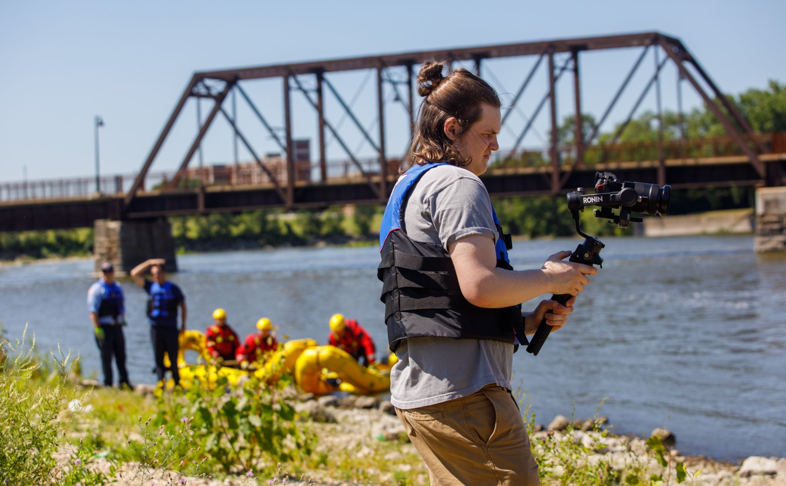

Videographer & photographer · Rockford, Illinois
Ben Westin
I shoot, edit, and color interview-driven stories for schools, nonprofits, and community organizations, and I handle projects from planning through final delivery.
Selected work
Projects
Social and short-form
Vertical cuts
Event recaps and campaign clips built for Instagram, Reels, and Shorts.
Experience
Where I've worked
-
2022 – Present
Freelance Videographer & Photographer
Rockford, IL · operating as Westin Vision since 2026
Video and photo work for nonprofits, school districts, municipalities, and community organizations, from quote and planning through shooting, editing, color, and audio. Produced the Butterfly Award honoree film for Family Counseling Services of Northern Illinois. Shoot weddings.
-
2022 – 2024
Freelance Videographer
Evolution Digital Marketing Agency · Rockford, IL
Marketing videos for small businesses, nonprofits, and political campaigns, as part of the agency's production team on local and statewide campaigns.
-
2023
Freelance Videographer
Guilford High School · Rockford, IL
Developed, filmed, and edited promotional films for the Production Academy, graphic design lab, and a credit union partner.
-
2023
Concert Photographer
WISCANSIN FEST · Milwaukee, WI
Live concert and festival photography in fast-changing stage light.
-
2022
Media Intern
Auburn High School · Rockford, IL
Taught students cameras and editing software; designed and taught a photography lesson.

About
Made in Rockford.
I grew up in the Rockford area and I'm building my career here. Most of my work centers on people telling their own stories: students explaining what they're learning, families at community events, and nonprofit staff talking about the people they serve.
I studied Creative Technology at Illinois State and media production at Rock Valley College, and I've been working freelance since 2022. I'm comfortable running a shoot alone and just as comfortable as one part of a larger team.